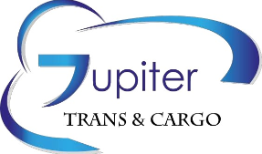
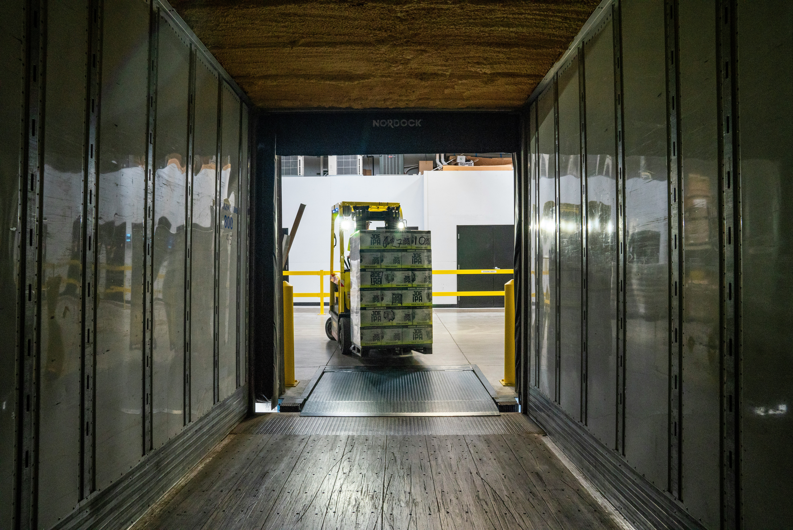

Kompleksowo organizujemy przewóz ładunków od momentu ich nadania aż do odbioru. Planujemy, koordynujemy i nadzorujemy cały proces transportowy w Polsce oraz na terenie Europy.

Jupiter Trans & Cargo działa na rynku od 2015 roku i specjalizuje się w kompleksowej organizacji przewozu ładunków.
Zajmujemy się całym procesem transportowym — od przyjęcia zlecenia i zaplanowania trasy, przez dobór odpowiedniego pojazdu, aż po nadzór nad załadunkiem, przewozem, rozładunkiem i odbiorem towaru.
Wieloletnie doświadczenie pozwala nam skutecznie reagować również w trudnych i niespodziewanych sytuacjach. Analizujemy dostępne możliwości, doradzamy klientom i wybieramy rozwiązania, które łączą bezpieczeństwo, sprawność i rozsądne koszty.
Koordynujemy najważniejsze etapy procesu transportowego i dopasowujemy rozwiązania do potrzeb konkretnego zlecenia oraz ładunku.
Analizujemy możliwe trasy oraz warunki przewozu, aby odpowiednio zaplanować realizację zlecenia.
Dobieramy odpowiedni środek transportu do charakteru, wymiarów oraz wymagań przewożonego ładunku.
Organizujemy proces przewozu i koordynujemy jego kluczowe etapy, od nadania aż do odbioru.
Nadzorujemy realizację transportu od momentu załadunku aż do końcowego rozładunku.
Pomagamy w przygotowaniu i koordynacji dokumentów niezbędnych do prawidłowej realizacji przewozu.
Dbamy o właściwe zabezpieczenie procesu transportowego oraz odpowiednie rozwiązania ubezpieczeniowe.
Analizujemy rynek, możliwości przewozu oraz wymagania zlecenia, aby wybrać odpowiednie rozwiązanie i ograniczyć ryzyko niepotrzebnych kosztów oraz opóźnień.
Każdy transport wymaga odpowiedniego planowania oraz kontroli kolejnych etapów realizacji.
Poznajemy wymagania klienta i charakterystykę ładunku.
Dobieramy trasę, pojazd i odpowiednie rozwiązanie.
Koordynujemy załadunek i przebieg realizacji przewozu.
Nadzorujemy transport aż do rozładunku i odbioru ładunku.
W spedycji liczy się nie tylko znalezienie przewoźnika. Liczy się doświadczenie, odpowiedzialność i umiejętność podejmowania właściwych decyzji.
Stawiamy na uczciwe i długoterminowe relacje z naszymi klientami.
Zwracamy uwagę na szczegóły i dokładnie koordynujemy kolejne etapy realizacji zlecenia.
Pomagamy klientom dobrać odpowiednie rozwiązanie transportowe.
Działamy od 2015 roku i wykorzystujemy zdobyte doświadczenie przy kolejnych realizacjach.
Potrafimy reagować na trudne sytuacje oraz szukać bezpiecznych rozwiązań.
Analizujemy rynek i organizujemy transport tak, aby oszczędzać czas oraz pieniądze klienta.
Organizujemy przewozy na terenie całej Polski, państw Unii Europejskiej oraz pozostałych krajów znajdujących się na kontynencie europejskim.
Dobieramy rozwiązanie w zależności od kierunku, charakteru ładunku i indywidualnych wymagań zlecenia.
Zaufanie klientów oraz wieloletnia współpraca są dla nas jednym z najważniejszych potwierdzeń jakości świadczonych usług.
Profesjonalna organizacja przewozów wymaga odpowiednich kompetencji, uprawnień oraz zabezpieczenia.
Potwierdzenie kwalifikacji zawodowych związanych z działalnością w branży transportowej.
Uprawnienia związane z organizacją i realizacją międzynarodowego transportu drogowego rzeczy.
Odpowiednie zabezpieczenie działalności oraz organizowanych procesów transportowych.
Skontaktuj się z Jupiter Trans & Cargo, aby omówić organizację przewozu i dobrać odpowiednie rozwiązanie.